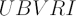
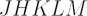
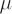

In astronomy, the term ‘broadband’ refers to the width of the frequency spectrum over which a given observation takes place, and is used to distinguish between continuum and spectral line observations (see the entry for narrowband for the latter). The wider the bandwidth of the observation, the more sensitive it is, so for continuum observations or photometry at any wavelength a broadband (wideband) filter can be used.
At optical wavelengths the commonest set of broadband filters is the Johnson-Cousins

(ultraviolet, blue, visual, red, infrared) system with bandwidths of ~1000 A. The colour indices of stars measured by the various bands in the system provide useful measures of spectral types and interstellar extinction. The U filter is centred around 360 nm, whilst the I filter is centred around 810 nm.The extension of this system into the near-infrared part of the spectrum is given by the

broadband filters of width ~1
m which lie in spectral windows of optimum atmospheric transmission, between those affected by water vapour. The J filter is centred around 1.2 microns, and the M filter is centred around 4.8 microns.In radio astronomy, broadband observations typically refer to frequency widths of order ~100 MHz.